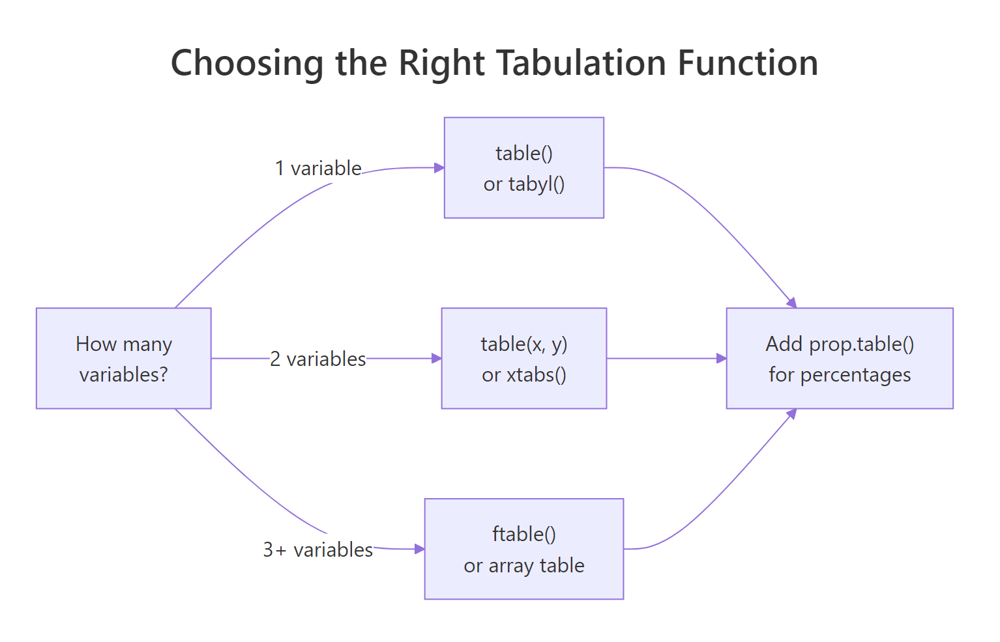
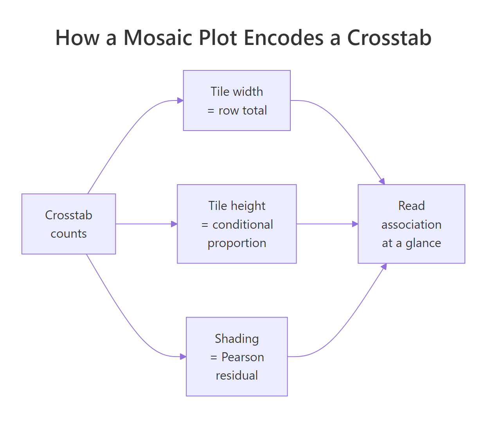
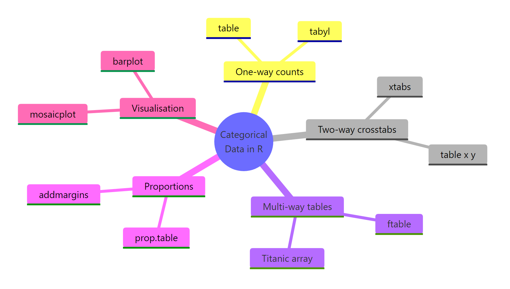

Categorical Data in R: Frequency Tables, Crosstabs & Mosaic Plots
Categorical data in R is summarised with three core tools: table() for one-way frequency counts, xtabs() or janitor::tabyl() for crosstabs of two variables, and mosaicplot() for visualising associations. Together they answer "how often?", "compared to what?", and "is there a pattern?" in a few lines of code.
How do you build a frequency table in R?
If you have a column of categories, like species, treatment groups, or survey responses, your first question is almost always the same: how many of each? The table() function answers that in a single line. The example below counts how many chickens received each diet in the built-in chickwts dataset, and the result is the simplest categorical summary in R: a named vector of counts ready to feed into proportions, plots, or tests.
Six diet groups, with sunflower the most common (14 chickens) and horsebean the least (10). The output is a table object, a named integer vector under the hood, but R prints it with category labels above the counts so you can read it as a small report.
table() returns more than a printed summary. You can sort it, sum it, or pass it to other functions:
The sum() confirms 71 chickens total, and sort() ranks the diets from most to least common, which is much easier to scan than the alphabetical default.
sort(tbl, decreasing = TRUE) puts the dominant categories on top, which is what most readers want to see first.Try it: Use table() to count how many flowers of each species are in the built-in iris dataset. Save the result to ex_iris_counts.
Click to reveal solution
Explanation: Pass the column directly to table(). Iris is balanced by design, so each species has exactly 50 rows.
What counts as categorical data in R?
In R, categorical data lives in two storage types: factors and character vectors. Both work with table(), but they behave differently in plots, models, and ordering. A factor stores its categories as an internal set of levels (often with a meaningful order), while a character vector is just text and gets sorted alphabetically by default.
chickwts$feed is a factor, and its levels appear in alphabetical order, which is also the order table() uses when printing.
When you start from a character vector, you almost always want to convert it to a factor with a meaningful level order. Otherwise R sorts categories alphabetically, which can be misleading for things like days of the week or low/medium/high.
Two things happen when you set explicit levels. First, the order changes from alphabetical (Fri, Mon, Tue, Wed) to weekday order (Mon, Tue, Wed, Thu, Fri). Second, the Thu level shows up with a count of 0, even though there are no Thursdays in the data. Reporting "zero observations" is often more honest than silently dropping the category.
table(), barplot(), and ggplot axis afterwards will respect that order without further tweaking.table() only shows values it actually sees in the data. If your survey allows five response options but only four appear, a character column will silently omit the fifth. Convert to a factor with all five levels to surface the gap.Try it: Convert the vector sizes <- c("S", "L", "M", "M", "S", "XL", "L") to a factor ex_sizes with levels in the natural order S, M, L, XL, then tabulate it.
Click to reveal solution
Explanation: Passing levels in the natural order overrides the alphabetical default, so the table reads from smallest to largest.
How do you turn counts into proportions and percentages?
Raw counts are useful, but stakeholders usually ask for proportions or percentages. R's prop.table() divides each cell by the table's total, giving you proportions between 0 and 1. Multiply by 100 and round for a presentation-ready percentage.
The proportions sum to 1 and the percentages to 100 (within rounding). Soybean leads at 19.7% and horsebean trails at 14.1%. Notice that we kept the original tbl and assigned both the proportions and percentages to new names. That's a habit worth keeping: each summary stays available for follow-up code without recomputing.
When you have a two-way table, totals at the row, column, or grand level become essential. addmargins() adds them in one step.
For a one-way table, addmargins() simply appends the grand total. For two-way tables it's much more powerful, as we'll see in the next section.
prop.table(tbl, margin = 1) for row percentages and margin = 2 for column percentages. The margin argument tells prop.table() what to divide by. With no margin, every cell is divided by the grand total. With margin = 1, each row sums to 1, which answers "given this row, what's the breakdown?".Try it: Compute the percentage of each species in the iris dataset to one decimal place. Save the result to ex_iris_pct.
Click to reveal solution
Explanation: Wrap table() in prop.table(), multiply by 100, and round. The chained calls read from the inside out.
How do you create crosstabs of two categorical variables?
A crosstab (also called a contingency table or two-way table) shows the counts of every combination of two categorical variables. R gives you three good options: table(x, y) for quick base-R use, xtabs() for formula-style code that works inside data frames, and janitor::tabyl() for a tidyverse-friendly pipeline with built-in percentage formatting. The decision flow below summarises when to reach for each.

Figure 1: How to choose a tabulation function based on the number of variables.
The simplest crosstab passes two vectors to table():
Rows are cylinder counts, columns are gear counts. The largest cell is 8-cylinder cars with 3 gears (12 of them), and 8-cylinder cars never come with 4 gears in this dataset. The first variable becomes rows, the second becomes columns.
xtabs() is the formula-friendly cousin. It's especially handy when your data is already in a data frame and you want the code to read like a model formula:
Same numbers as table(x, y), but now we have row and column labels (cyl and gear) and the margins. addmargins() adds row totals on the right, column totals at the bottom, and the grand total in the corner.
xtabs() formulas like sentences. ~ cyl + gear reads as "cross-tabulate cyl with gear". For three variables write ~ cyl + gear + am, and so on. The data = argument lets you skip $ notation entirely.For row percentages with formatted output, the janitor package is hard to beat. tabyl() returns a data frame, so the result plays well with dplyr and pipes.
Each row now sums to 100% and shows the raw count in parentheses. You can immediately see that 85.7% of 8-cylinder cars have 3 gears, while 4-cylinder cars are dominated by 4-gear builds (72.7%). That kind of conditional view is where percentages shine.
gmodels::CrossTable() is another popular crosstab function. It produces dense output with row, column, and total percentages plus a chi-squared test. It's worth knowing for local work, though it isn't pre-loaded in this browser environment. Install with install.packages("gmodels") in RStudio.Try it: Build a crosstab of mtcars$am (transmission: 0 = automatic, 1 = manual) versus mtcars$gear, then compute row percentages with prop.table() and round to one decimal place. Save the result to ex_am_gear_pct.
Click to reveal solution
Explanation: margin = 1 tells prop.table() to make each row sum to 100%. Automatic cars (am=0) are mostly 3-gear; manual cars (am=1) lean to 4 gears with some 5-gear sports models.
How do you handle three-way and multi-way tables?
Real datasets often have more than two categorical variables. R stores these as multi-dimensional arrays, and base R ships with the classic 4-D Titanic table: passengers cross-classified by Class, Sex, Age, and Survived. Printing it directly is messy because R has to flatten four dimensions into a 2-D screen.
The shape 4 × 2 × 2 × 2 tells you there are 32 cells. To print this readably, use ftable() (flat table), which collapses the higher dimensions into nested headers:
Now we can read each combination on a single line. First-class adult women: 4 died, 140 survived. Crew adult men: 670 died, 192 survived. The "women and children first" pattern jumps off the page when you compare rows.
If you'd rather work from a data frame than an array, as.data.frame() gives you the long form, and xtabs() puts it back into a table:
The formula Freq ~ Class + Survived says "use Freq as the cell counts, cross by Class and Survived". This is the workflow when your raw data is already aggregated, like census or survey rollups.
To collapse a dimension on an existing table, use apply() with a sum:
Same numbers as xtabs(). The c("Class", "Survived") says "keep these two dimensions, sum out everything else (Sex and Age)".
apply(), indexing with [ , ], and dim() all work, but dplyr verbs do not. Convert to a data frame with as.data.frame() if you need the tidyverse, then back with xtabs() if you need an array.Try it: Use ftable() on the built-in UCBAdmissions dataset (3-D table of UC Berkeley admissions by Department, Gender, and Admit status). Save the result to ex_ucb_ftable.
Click to reveal solution
Explanation: Putting Dept and Gender on rows leaves Admit on columns. Look at Department A: male admits (512) versus rejects (313) gives a ~62% admit rate, while Department F admits hover near 6% across both genders. This dataset is the textbook example of Simpson's paradox.
How do you visualise associations with mosaic plots?
Tables are exact but slow to scan. A mosaic plot turns a crosstab into a tile-based picture: each tile's area is proportional to its cell count, so dominant combinations are visibly large and rare combinations are visibly small. Adding shade = TRUE colours the tiles by Pearson residuals, so you can spot which cells happen more or less often than independence would predict.

Figure 2: How a mosaic plot encodes counts: tile size and shading.
We'll use the built-in HairEyeColor table (people cross-classified by hair colour, eye colour, and sex). Slicing with [ , 1] keeps only the male slab, leaving a 2-D table that's easy to plot.
The horizontal width of each column reflects how many people have that hair colour, and the vertical splits show eye-colour proportions within each hair colour. Black-haired men are mostly brown-eyed; blond-haired men have a much larger blue slice. The areas tell the story without you doing any arithmetic.
The default colours are decorative. Setting shade = TRUE swaps them for a meaningful colour scale: blue for "more frequent than expected under independence", red for "less frequent than expected", and white for "about as expected".
Now the eye jumps to the unusual cells: the blue tile in the Blond/Blue corner means "many more blond-blue combinations than independence predicts", and the red tile near Black/Blue means "almost no black-haired blue-eyed men, much fewer than expected". That's the signal a chi-squared test puts a p-value on, but the picture often communicates faster than the test statistic.
Try it: Plot a shaded mosaic of UCBAdmissions[ , 1] (Department A only) and look at where the residuals are large.
Click to reveal solution
Explanation: In Department A, the Female-Admitted tile shades blue (more admissions than independence predicts), and the Male-Rejected tile shades red. Department A actually favoured women on the margin, even though the university overall admitted more men. This is the per-department view of Simpson's paradox.
Practice Exercises
These capstone exercises combine concepts from across the tutorial. Use distinct variable names so they don't overwrite anything you defined earlier.
Exercise 1: Crosstab with row percentages
From mtcars, build a 2-way crosstab of cylinders (cyl) versus transmission (am). Convert it to row percentages so each row sums to 100%, rounded to one decimal place. Save the percentage table to cap_cyl_am_pct.
Click to reveal solution
Explanation: Reading row by row, 72.7% of 4-cylinder cars are manual, while only 14.3% of 8-cylinder cars are. Bigger engines lean automatic in this dataset.
Exercise 2: Survival rate by class on the Titanic
From the Titanic table, compute the survival rate (proportion who survived) for adult passengers in each class. Save a named vector cap_class_rate with one rate per class.
Click to reveal solution
Explanation: First-class adults survived at 62.5%, third-class at 25.2%. The class gap is exactly the kind of pattern a mosaic plot would also surface, but here we have it as a single ratio per class.
Exercise 3: Mosaic of Titanic, collapsed over sex
Build a shaded mosaic plot of the Titanic data after collapsing over Sex. Use apply() to sum out Sex and keep Class, Age, and Survived. Then plot the resulting 3-D table.
Click to reveal solution
Explanation: The shading lights up two cells in particular: 1st-class children survived more than independence predicts (blue), and 3rd-class adults died more than expected (red). The plot summarises three variables and one association in a single picture.
Complete Example: HairEyeColor end-to-end
Let's run the full categorical-data workflow on a single dataset to tie everything together. We'll start from the 3-D HairEyeColor table, collapse over sex, build a frequency table, compute proportions, and finish with a shaded mosaic.
Walking through what the pipeline tells us: collapsing over sex leaves 592 people. Black hair pairs with brown eyes 63% of the time, while blond hair pairs with blue eyes 74% of the time. The mosaic plot's shading confirms this is not a small effect: the Blond/Blue cell is dramatically blue, the Black/Blue cell dramatically red, and the brown-haired rows look closest to "independence" (mostly white tiles). One workflow, four steps, and you have both numbers and a picture.
Summary
The categorical data toolkit in R is small but complete. Pick the function that matches your variable count and your output needs, layer on proportions when stakeholders want percentages, and bring out a mosaic plot when a story needs to be seen, not just read.

Figure 3: The categorical data toolkit at a glance.
| Task | Function | Notes |
|---|---|---|
| One-way counts | table(), tabyl() |
tabyl() returns a tidy data frame |
| Two-way crosstab | table(x, y), xtabs(~ x + y) |
Use xtabs() for formula syntax |
| Multi-way table | ftable(), array slicing |
Flat printing for >2 dims |
| Proportions | prop.table() |
margin = 1 for row %, 2 for column % |
| Margins | addmargins() |
Adds row, column, grand totals |
| Visualise | mosaicplot(..., shade = TRUE) |
Shading shows departure from independence |
| Tidy formatting | janitor::adorn_* |
Combine percentages, counts, rounding |
Three habits will save you time. First, convert character columns to factors with explicit levels so order is meaningful and missing categories show as zero. Second, always pair counts with proportions, since stakeholders almost always want both. Third, when a table has three or more dimensions, decide whether to flatten with ftable() for printing or collapse with apply() for analysis.
References
- R Core Team. An Introduction to R, Section 7.4: Cross-classifying factors. Link
- Wickham, H. & Grolemund, G. R for Data Science, 2nd edition, Chapter on factors (forcats). Link
- Friendly, M. & Meyer, D. Discrete Data Analysis with R: Visualization and Modeling Techniques for Categorical and Count Data. CRC Press (2016). Link
- janitor package documentation.
tabyl(),adorn_percentages(),adorn_pct_formatting(). Link - R documentation:
?table,?xtabs,?ftable,?mosaicplot,?prop.table,?addmargins. - CRAN Task View: Categorical Data Analysis. Link
Continue Learning
- Chi-Square Tests in R: once you have a crosstab, the chi-squared test of independence asks whether the association is statistically significant.
- R Factors: go deeper on factor levels, ordered factors, and why level order drives every downstream summary.
- ggplot2 Tutorial: bar charts, stacked bars, and faceted plots are the natural ggplot complement to mosaic plots.